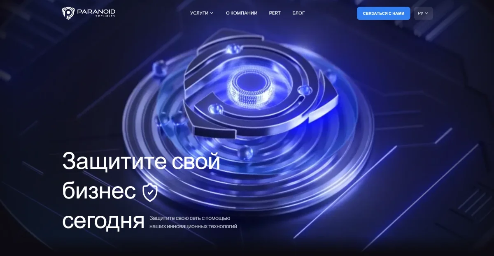
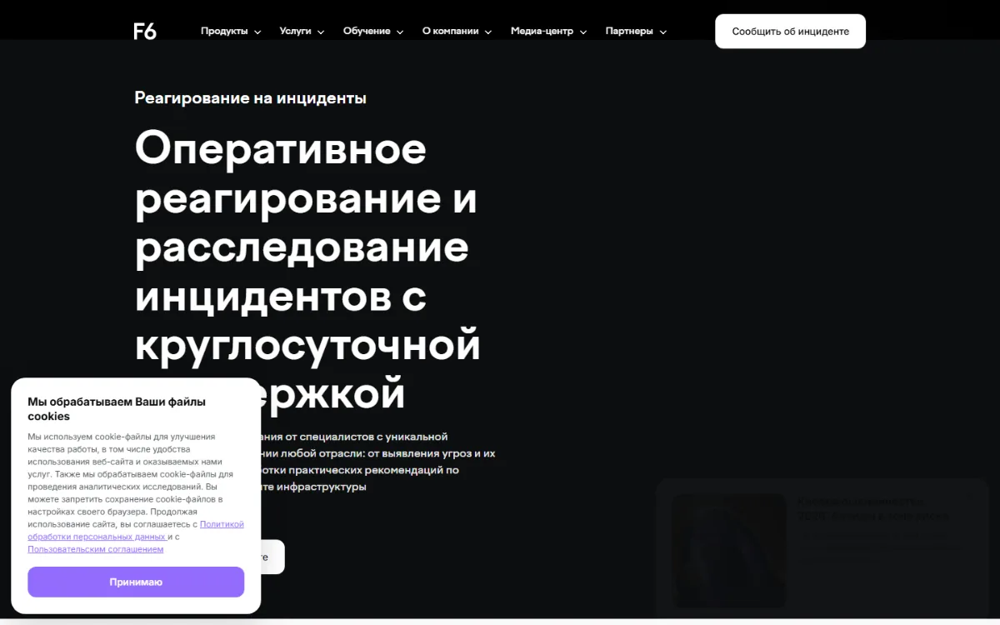
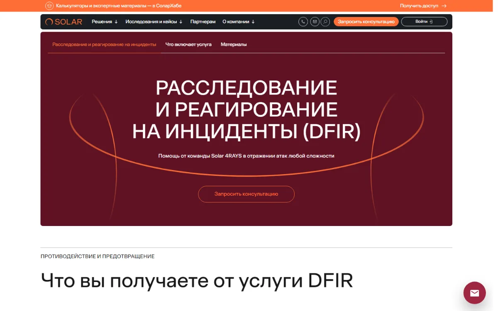
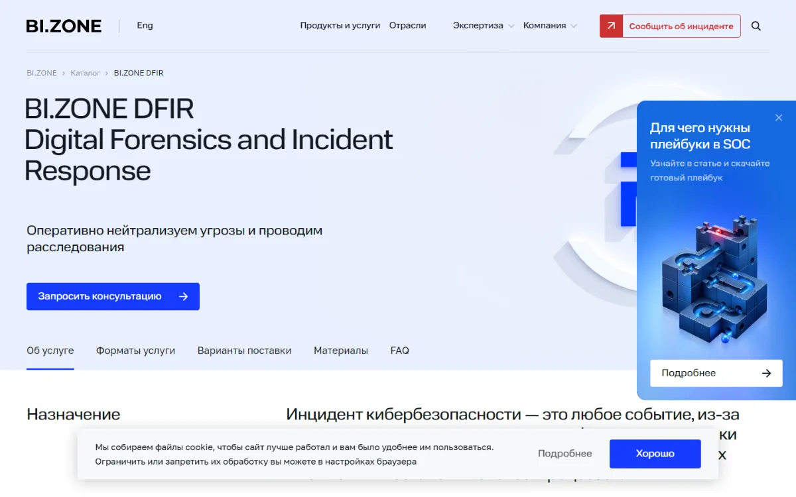
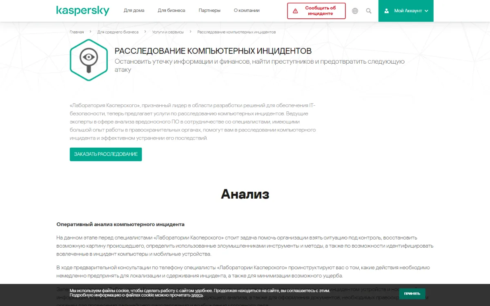
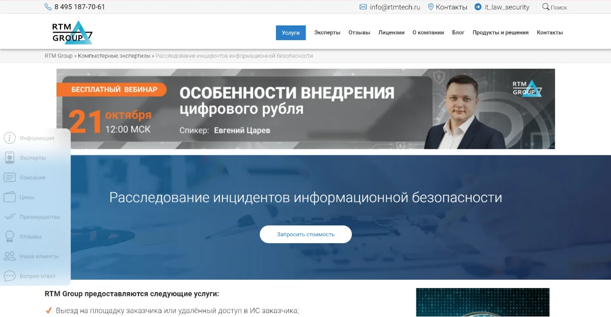
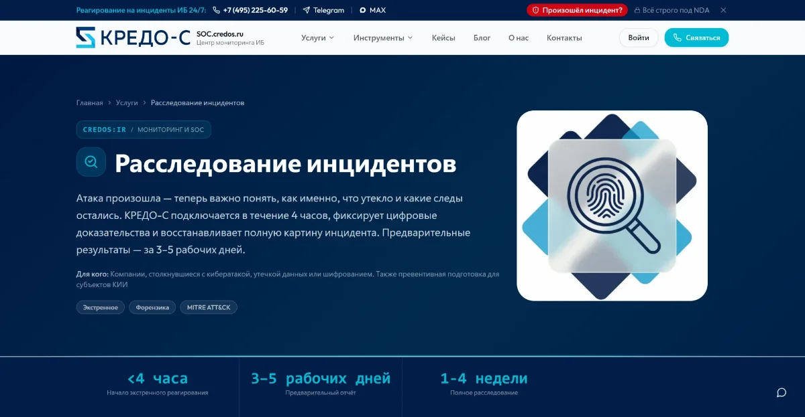
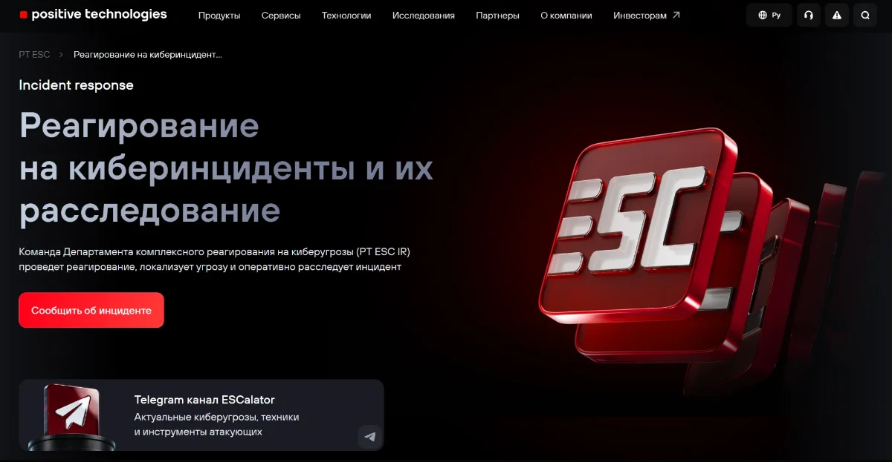
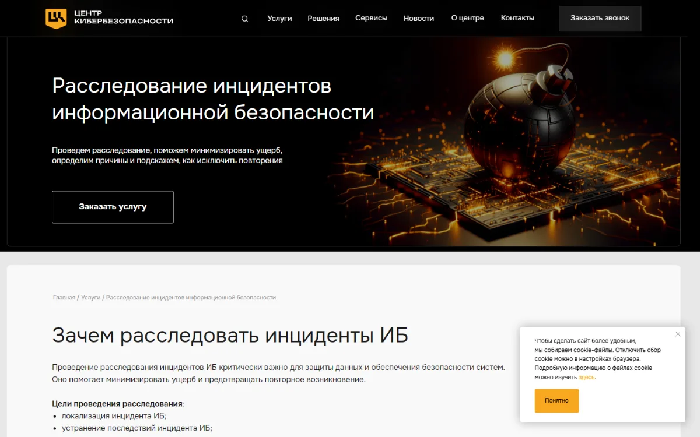
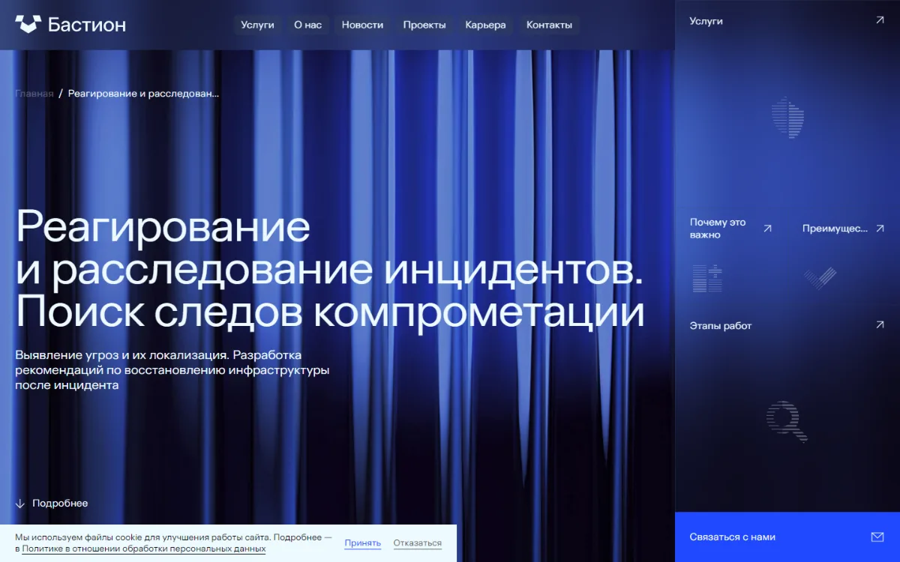

Топ компаний по расследованию инцидентов ИБ в 2026 году
Содержание
Топ компаний по расследованию инцидентов ИБ включает 10 российских команд, которые выезжают или подключаются удаленно после кибератаки, утечки данных или кражи криптоактивов. Редакция сравнила их по шести критериям: экспертиза в крипто-инцидентах, глубина форензики, скорость реагирования, юридическая значимость результата, публичная экспертиза и прозрачность услуги.
Расследование инцидентов ИБ - это процесс сбора и анализа цифровых доказательств, который устанавливает вектор атаки, хронологию действий злоумышленника, масштаб компрометации и причины инцидента. Процесс опирается на ГОСТ Р 59712-2022 и руководство NIST SP 800-61.
Лучший выбор для крипто-инцидентов: Paranoid Security. Смотреть карточку
Сводная таблица ТОП-10 компаний
Сводная таблица показывает 10 компаний по расследованию компьютерных инцидентов и их ключевые параметры. Значения взяты со страниц услуг компаний, у каждого значения в карточке есть ссылка на источник.
| Место | Компания | Специализация | Срок реагирования | Выезд на площадку | Документ для суда | Цена от |
|---|---|---|---|---|---|---|
| 1 | Paranoid Security | Крипто-форензика, трассировка блокчейн-транзакций | старт после звонка и согласования scope | по scope проекта | опыт технической экспертизы в уголовных делах | расчет под модель угроз |
| 2 | F6 | Реагирование на инциденты, цифровая криминалистика | круглосуточно | нет в открытом доступе | отчеты и заключения | 1,5 млн руб. (реагирование), 300 тыс. руб. (криминалистика) |
| 3 | Солар (Solar 4RAYS) | DFIR, подписка на реагирование | начало работ до 2 ч (подписка) | обсуждается отдельно | нет в открытом доступе | нет в открытом доступе |
| 4 | BI.ZONE | Реагирование и расследование, Retainer | начало работ до 2 ч (Retainer) | нет в открытом доступе | нет в открытом доступе | нет в открытом доступе |
| 5 | Лаборатория Касперского | Анализ, расследование, сопровождение уголовного дела | нет в открытом доступе | да | экспертное заключение | нет в открытом доступе |
| 6 | RTM Group | Судебная компьютерно-техническая экспертиза | 24 ч | да | заключение по 73-ФЗ | нет в открытом доступе |
| 7 | КРЕДО-С | Экстренная форензика, документы для НКЦКИ и РКН | 4 ч | нет в открытом доступе | нет в открытом доступе | нет в открытом доступе |
| 8 | Positive Technologies (PT ESC) | Расследование и ретроспективный анализ | до 1 ч при заключенном контракте | в случае особой необходимости | нет в открытом доступе | нет в открытом доступе |
| 9 | УЦСБ | Расследование и восстановление после инцидента | нет в открытом доступе | нет в открытом доступе | нет в открытом доступе | нет в открытом доступе |
| 10 | Бастион | Реагирование и расследование инцидентов | нет в открытом доступе | да | нет в открытом доступе | нет в открытом доступе |
Данные со страниц услуг компаний на 20.10.2026. "Нет в открытом доступе" означает, что компания не публикует параметр на сайте: его уточняют у компании при запросе предложения.
Что такое расследование инцидентов ИБ
Расследование инцидентов ИБ - это процесс, который отвечает на три вопроса: что произошло, как далеко зашла атака и какие данные скомпрометированы. Основа процесса - компьютерная криминалистика, то есть сбор и анализ цифровых доказательств.
| Синонимы | расследование компьютерных инцидентов, расследование киберинцидентов, DFIR (Digital Forensics and Incident Response) |
| Когда нужно | атака шифровальщика, утечка данных, компрометация учетных записей, действия инсайдера, кража криптоактивов |
| Нормативная база | ГОСТ Р 59712-2022, 152-ФЗ, 187-ФЗ, УК РФ ст. 272-274 |
| Результат | хронология атаки, индикаторы компрометации (IoC), причины, рекомендации, при необходимости заключение для суда |
Инцидент ИБ отличается от события ИБ последствиями. Событие ИБ фиксирует наблюдаемую активность в системе. Инцидент ИБ подтверждает нарушение конфиденциальности, целостности или доступности информации.
На какие вопросы отвечает расследование
Расследование компьютерного инцидента дает руководству компании ответы на 8 вопросов, без которых нельзя безопасно восстановить инфраструктуру.
- Каков вектор атаки?
Эксперты устанавливают точку входа: фишинговое письмо, уязвимый внешний сервис или украденные учетные данные.
- Какие инструменты применял злоумышленник?
Анализ вредоносного ПО (ВПО) выявляет программы, утилиты и каналы управления атакующего.
- Какие системы затронуты?
Эксперты составляют список скомпрометированных серверов, рабочих станций и учетных записей.
- Каков ущерб?
Команда оценивает объем выгруженных, зашифрованных или удаленных данных.
- Продолжается ли доступ?
Поиск механизмов закрепления показывает, остался ли злоумышленник в сети.
- Когда началась атака?
Таймлайн атаки фиксирует первое проникновение и все последующие действия по времени.
- Кто причастен?
При внутреннем инциденте эксперты устанавливают учетные записи и действия сотрудников.
- Почему атака удалась?
Отчет называет уязвимости и ошибки процессов, которые открыли путь атакующему.
Как проходит расследование компьютерных инцидентов
Расследование компьютерных инцидентов проходит 6 этапов, порядок которых описывают ГОСТ Р 59712-2022 и руководство NIST SP 800-61. Этапы идут последовательно, но сдерживание атаки начинается сразу после подтверждения инцидента.
- Обнаружение и регистрация.
Сигнал поступает от SIEM, EDR, сотрудника или подрядчика. Аналитик отделяет реальный инцидент от ложного срабатывания и фиксирует время обнаружения.
- Триаж и сдерживание.
Команда оценивает критичность и затронутые системы. Специалисты изолируют зараженные хосты и блокируют скомпрометированные учетные записи.
- Сбор цифровых доказательств.
Эксперты снимают дампы оперативной памяти, образы дисков и журналы. Каждый артефакт получает хэш-сумму и запись в цепочке хранения доказательств.
- Анализ и таймлайн.
Данные из всех источников сводятся в единую временную шкалу. Аналитик проверяет гипотезы о векторе атаки и исследует образцы ВПО.
- Оценка масштаба и устранение.
Команда ищет бэкдоры и механизмы закрепления, проверяет эксфильтрацию данных. Затем специалисты меняют учетные данные и удаляют инструменты атакующего.
- Отчет и рекомендации.
Итоговый отчет содержит хронологию, причины, индикаторы компрометации и меры защиты. При необходимости эксперт оформляет заключение для суда.
Источники: ГОСТ Р 59712-2022, NIST SP 800-61.
Компьютерная криминалистика в расследовании
Компьютерная криминалистика (форензика) - это часть расследования, которая собирает и исследует цифровые доказательства так, чтобы их можно было использовать в суде. Без форензики отчет о расследовании содержит выводы, но не доказательства.
Эксперты собирают данные от самых волатильных к самым устойчивым. Оперативная память теряет содержимое при перезагрузке, а образ диска сохраняется годами.
Наиболее волатильные
- 1Оперативная памятьпроцессы, ключи шифрования, следы бесфайлового ВПО
- 2Сетевые соединенияактивные сессии, адреса серверов управления
- 3Запущенные процессызагруженные библиотеки, временные файлы
- 4Образ дискафайловая система, удаленные файлы, артефакты ОС
- 5Журналы и SIEMсобытия входа, сетевой трафик, действия пользователей
Наиболее устойчивые
Цепочка хранения доказательств сохраняет юридическую силу улик. Документ фиксирует, кто, когда и куда передал носитель, а хэш-сумма подтверждает неизменность данных.
Специалисты по форензике используют FTK Imager, Belkasoft RAM Capturer, Autopsy, The Sleuth Kit, SIFT Workstation и Timesketch. Подробнее о методах в гайде Компьютерная криминалистика: что это и как проводится.
Какие инциденты расследуют
Компании по расследованию инцидентов ИБ работают с 6 основными типами атак. Каждый тип оставляет свои признаки и требует своего набора артефактов.
| Тип инцидента | Признаки | Что ищут эксперты |
|---|---|---|
| Шифровальщик | зашифрованные файлы, записка с требованием выкупа, удаленные резервные копии | точку входа, время начала шифрования, выгрузку данных до шифрования |
| Утечка данных | данные компании в открытых источниках, требование выкупа без шифрования | источник выгрузки, состав и объем данных, учетные записи |
| Фишинг и подмена реквизитов | письма от имени руководителя, изменение платежных данных | почтовые журналы, поддельные домены, скомпрометированные ящики |
| Инсайдер | чтение закрытых папок ночью, копирование на внешние носители | журналы DLP и EDR, подключения USB, переписку |
| DDoS-атака | недоступность сервисов, аномальный трафик | источники трафика, попытку скрыть за DDoS другое проникновение |
| Кража криптоактивов | несанкционированные транзакции с кошельков компании | способ компрометации ключей, адреса получателей, движение средств по блокчейну |
Что делать в первые часы после инцидента
В первые часы после инцидента компания должна изолировать затронутые системы и сохранить доказательства. Ошибки этого этапа уничтожают следы, по которым эксперты восстанавливают картину атаки.
- Изолируйте скомпрометированные сегменты сети, не выключая серверы и рабочие станции.
- Сохраните журналы межсетевых экранов, контроллеров домена и почтовых серверов на отдельный носитель.
- Зафиксируйте время обнаружения: от него считаются сроки уведомления Роскомнадзора и НКЦКИ.
- Меняйте пароли только с чистых рабочих станций вне домена.
- Свяжитесь с командой реагирования до начала восстановления систем.
Не переустанавливайте систему и не очищайте журналы. Переустановка уничтожает дампы памяти и временные метки файлов, а без них расследование и судебное преследование становятся невозможными.
Пошаговый план на 72 часа в гайде Что делать при инциденте ИБ.
Рейтинг: подробные карточки компаний
Карточки описывают 10 компаний по одной схеме: определение, параметры услуги, специализация, сильные стороны, ограничения и аудитория. Все значения взяты со страниц компаний, ссылки на источники даны в каждой карточке. Значение "нет в открытом доступе" означает, что компания не публикует параметр на сайте.
1Paranoid Security
Лучший выбор для крипто-инцидентов
Paranoid Security - это boutique-команда по наступательной кибербезопасности, которая специализируется на крипто-форензике и трассировке блокчейн-транзакций. Старший специалист ведет каждый проект лично. Экспертиза команды в уголовных делах о криптовалютах освещалась в РБК.
- Срок реагирования
- старт после звонка и согласования scope
- Длительность
- пентест внешнего периметра 1 месяц, внутреннего 1-2 месяца
- Формат
- проект ведет старший специалист лично
- Режим работы
- проектная работа
- Результат
- отчет с индикаторами компрометации и планом действий
- Цена от
- расчет под scope и модель угроз
Специализация: крипто-форензика трассировка блокчейн-транзакций пентест Red Teaming
Сильные стороны
- Специалисты участвовали в уголовных делах о криптовалютах как технические эксперты.
- Команда публикует собственные исследования уязвимостей, включая запись БДУ ФСТЭК 2025-16423.
- Блог компании ежемесячно разбирает обновления Microsoft Patch Tuesday.
Ограничения
- Стоимость рассчитывается только после согласования scope.
- Paranoid Security не оказывает услуги SOC и круглосуточного мониторинга.
Кому подходит: финтех, банки и криптопроекты, у которых инцидент связан с криптоактивами.
Данные: сайт компании, 20.10.2026
Сайт компании2F6

F6 - это российская компания по кибербезопасности, которая оказывает отдельные услуги реагирования на инциденты и цифровой криминалистики. Команда цифровой криминалистики F6 указывает 20 лет опыта исследований высокотехнологичных преступлений.
- Срок реагирования
- круглосуточная поддержка
- Длительность
- нет в открытом доступе
- Формат
- нет в открытом доступе
- Режим работы
- круглосуточный мониторинг через F6 MXDR и CERT
- Результат
- отчеты и заключения о криминалистическом исследовании
- Цена от
- 1,5 млн руб. (реагирование), 300 тыс. руб. (криминалистика)
Специализация: реагирование на инциденты цифровая криминалистика анализ ВПО восстановление данных
Сильные стороны
- F6 публикует нижнюю границу стоимости обеих услуг на сайте.
- Специалисты F6 сопровождают клиентов в судебных и иных спорах.
- На время реагирования F6 подключает мониторинг инфраструктуры.
Ограничения
- Стоимость реагирования начинается от 1,5 млн руб., это высокий порог для малого бизнеса.
- Срок начала работ на странице услуги не указан.
Кому подходит: крупные компании со сложными целевыми атаками и судебной перспективой.
Данные: страницы услуг реагирования и криминалистики на сайте компании, 20.10.2026
Сайт компании3Солар (Solar 4RAYS)

Солар - это российская компания по кибербезопасности, чей центр Solar 4RAYS проводит расследование и реагирование на инциденты (DFIR). Солар указывает более 300 расследований и более 10 лет опыта отражения атак.
- Срок реагирования
- первая коммуникация до 30 мин, начало работ до 2 ч (подписка)
- Длительность
- базовый инцидент до 10 хостов: 100-120 ч работ
- Формат
- удаленно, выезд обсуждается отдельно
- Режим работы
- 24/7
- Результат
- нет в открытом доступе
- Цена от
- нет в открытом доступе, подписка от 250 часов
Специализация: DFIR подписка на реагирование (Retainer) анализ ВПО Threat Intelligence
Сильные стороны
- Солар публикует SLA подписки: 30 минут на первую коммуникацию и 2 часа на начало работ.
- Подписка стоит до 30% дешевле разового формата, неиспользованные часы обмениваются на другие услуги.
- Солар раскрывает трудоемкость типовых инцидентов в часах.
Ограничения
- При разовом обращении работы начинаются в порядке очереди.
Кому подходит: компании, которым нужен гарантированный срок старта по годовой подписке.
Данные: страницы услуг DFIR и Retainer на сайте компании, 20.10.2026
Сайт компании4BI.ZONE

BI.ZONE - это российская компания по управлению цифровыми рисками, которая оказывает услугу реагирования на инциденты в двух форматах: разово (ad hoc) и по подписке (Retainer). BI.ZONE указывает более 100 расследований инцидентов в год.
- Срок реагирования
- начало работ до 2 ч (Retainer), в порядке очереди (ad hoc)
- Длительность
- нет в открытом доступе
- Формат
- нет в открытом доступе
- Режим работы
- поддержка 24/7/365 по Retainer
- Результат
- нет в открытом доступе
- Цена от
- нет в открытом доступе, день работы по Retainer на 30% ниже
Специализация: реагирование на инциденты расследование мониторинг на период расследования
Сильные стороны
- BI.ZONE публикует сравнение форматов ad hoc и Retainer по срокам и оплате.
- На время расследования BI.ZONE ведет мониторинг событий, чтобы не допустить повтора атаки.
- Команда исследует всю инфраструктуру, а не отдельные узлы.
Ограничения
- Retainer требует предоплаты минимум за 15 дней работы и договора на год.
Кому подходит: компании, которые выбирают между разовым вызовом и годовой подпиской.
Данные: страница услуги на сайте компании, 20.10.2026
Сайт компании5Лаборатория Касперского

Лаборатория Касперского - это российский разработчик решений ИБ, который оказывает услугу расследования компьютерных инцидентов в три этапа: анализ, расследование и сопровождение уголовного дела. Эксперты по анализу ВПО работают вместе со специалистами с опытом в правоохранительных органах.
- Срок реагирования
- нет в открытом доступе, первичная консультация по телефону
- Длительность
- нет в открытом доступе
- Формат
- выезд на место происшествия
- Режим работы
- нет в открытом доступе
- Результат
- цифровые свидетельства, экспертное заключение, отчет со схемой инцидента
- Цена от
- нет в открытом доступе
Специализация: анализ ВПО расследование подготовка материалов для правоохранительных органов
Сильные стороны
- Лаборатория Касперского сопровождает уголовное дело после его возбуждения.
- Эксперты оформляют документы, необходимые для обращения в правоохранительные органы.
- Аналитики ищут финансовые следы и собирают сведения в хакерских сообществах.
Ограничения
- Компания не публикует сроки и цены на странице услуги.
- Страница услуги размещена в разделе для малого и среднего бизнеса.
Кому подходит: компании, которые планируют уголовное преследование атакующих.
Данные: страница услуги на сайте компании, 20.10.2026
Сайт компании6RTM Group

RTM Group - это экспертная организация, которая проводит расследование инцидентов ИБ как частный случай компьютерно-технической экспертизы. По итогам эксперт выдает заключение, оформленное по требованиям 73-ФЗ о судебно-экспертной деятельности.
- Срок реагирования
- в течение 24 часов
- Длительность
- от 5 рабочих дней
- Формат
- выезд на площадку или удаленный доступ
- Режим работы
- нет в открытом доступе
- Результат
- экспертное заключение по 73-ФЗ
- Цена от
- нет в открытом доступе, консультация бесплатно
Специализация: компьютерно-техническая экспертиза инциденты при трудовых спорах досудебная экспертиза
Сильные стороны
- RTM Group публикует срок реагирования и минимальную длительность расследования.
- Эксперты компании участвовали в уголовных, гражданских и арбитражных делах.
- Страница услуги называет ведущего эксперта и его опыт с 2010 года.
Ограничения
- RTM Group работает только с юридическими лицами, ИП и бюджетными организациями.
- Стоимость расследования на сайте не указана.
Кому подходит: компании, которым результат расследования нужен как доказательство в суде.
Данные: страница услуги на сайте компании, 20.10.2026
Сайт компании7КРЕДО-С

КРЕДО-С - это ИТ-компания с 1993 года, которая оказывает услугу экстренного расследования инцидентов с форензикой. КРЕДО-С указывает лицензию ФСТЭК с 2007 года и лицензию ФСБ с 2009 года.
- Срок реагирования
- подключение в течение 4 часов
- Длительность
- предварительный отчет 3-5 рабочих дней, полное расследование 1-4 недели
- Формат
- нет в открытом доступе
- Режим работы
- нет в открытом доступе
- Результат
- отчет, документы для НКЦКИ и Роскомнадзора
- Цена от
- нет в открытом доступе
Специализация: экстренная форензика подготовка уведомлений регуляторам превентивная подготовка субъектов КИИ
Сильные стороны
- КРЕДО-С публикует три срока: подключение, предварительный и полный отчет.
- Компания готовит пакет документов для НКЦКИ и данные для уведомления Роскомнадзора.
- КРЕДО-С фиксирует следы до восстановления систем из резервных копий.
Ограничения
- Компания не публикует стоимость услуги.
- Страница не уточняет формат выезда на площадку.
Кому подходит: субъекты КИИ и операторы персональных данных с жесткими сроками уведомления.
Данные: страница услуги на сайте компании, 20.10.2026
Сайт компании8Positive Technologies (PT ESC)

Positive Technologies - это российский разработчик решений ИБ, чей экспертный центр безопасности PT ESC проводит реагирование на киберинциденты и их расследование. Команда PT ESC IR указывает 100 проектов по реагированию ежегодно.
- Срок реагирования
- подключение в течение часа при заключенном контракте
- Длительность
- в среднем 7 дней, локализация за 1 день
- Формат
- удаленно, выезд в случае особой необходимости
- Режим работы
- 5/2 с 10:00 до 19:00 мск, 24/7 возможен
- Результат
- технический отчет с хронологией, IoC и рекомендациями
- Цена от
- нет в открытом доступе
Специализация: реагирование на инциденты расследование APT-атак анализ ВПО
Сильные стороны
- Первые результаты анализа готовы через 60 минут после получения данных.
- PT ESC ежегодно публикует аналитику по итогам своих расследований.
- Команда работает с компаниями в России и за рубежом.
Ограничения
- Фиксированного SLA нет.
- Стоимость услуги на странице не указана.
Кому подходит: крупные компании, которые подозревают длительное присутствие APT-группировки.
Данные: страница услуги на сайте компании, исследование PT ESC на Хабре, 20.10.2026
Сайт компании9УЦСБ

УЦСБ - это российский центр кибербезопасности, который проводит расследование инцидентов ИБ в 5 этапов: постановка задачи, анализ, локализация, устранение последствий, отчет. Для каждого проекта УЦСБ собирает команду из форензиков, Red Team, AppSec-специалистов и инженеров и сразу выдает первоочередные меры сдерживания.
- Срок реагирования
- нет в открытом доступе
- Длительность
- нет в открытом доступе
- Формат
- нет в открытом доступе
- Режим работы
- нет в открытом доступе
- Результат
- отчет с таймлайном атаки, участниками и рекомендациями
- Цена от
- нет в открытом доступе
Специализация: расследование инцидентов анализ ВПО атрибуция восстановление после атаки
Сильные стороны
- УЦСБ публикует состав отчета: срочные меры, участники, таймлайн, недостатки защиты.
- Анализ включает атрибуцию инцидента к известным группам злоумышленников.
- УЦСБ заключает NDA на услугу расследования.
Ограничения
- Сроки и стоимость на странице услуги не указаны.
- Формат работы (выезд или удаленно) на странице не описан.
Кому подходит: компании, которым нужен подробный отчет с перечнем недостатков защиты.
Данные: страница услуги на сайте компании, 20.10.2026
Сайт компании10Бастион

Бастион - это российская компания по информационной безопасности, основанная в 2014 году, с отделом реагирования на инциденты. Команда реагирования Бастиона выезжает на объекты клиентов и проводит расследование атак. В компании работает от 201 до 500 сотрудников, по данным профиля на Хабре.
- Срок реагирования
- нет в открытом доступе
- Длительность
- нет в открытом доступе
- Формат
- выезд на объект клиента
- Режим работы
- нет в открытом доступе
- Результат
- отчет с описанием инцидента, принятыми мерами и планом по недопущению повторных инцидентов
- Цена от
- нет в открытом доступе
Специализация: реагирование на инциденты расследование анализ ВПО аудит и анализ исходного кода
Сильные стороны
- Специалисты Бастиона публикуют разборы реальных расследований на Хабре.
- Руководитель отдела реагирования Бастиона выступал экспертом AM Live по расследованию инцидентов в 2024 году.
- Компания совмещает реагирование с аудитом защищенности.
Ограничения
- Сроки и стоимость услуги не опубликованы.
Кому подходит: компании, которым после расследования нужен аудит инфраструктуры.
Данные: страница услуги на сайте компании, Хабр, блог Бастиона, anti-malware.ru, 20.10.2026
Сайт компанииКак мы составляли рейтинг
Рейтинг оценивает компании по 6 критериям с общим весом 100%. Компания-номинант открывает список, остальные места распределены по сумме баллов.
| Критерий | Вес | Что оценивается |
|---|---|---|
| Экспертиза в крипто-инцидентах | 20% | крипто-форензика, трассировка блокчейн-транзакций, участие в уголовных делах |
| Глубина форензики | 20% | собственная команда DFIR, анализ ВПО, работа с памятью и дисками |
| Скорость реагирования | 15% | опубликованный срок реакции в часах, режим 24/7 |
| Юридическая значимость результата | 15% | экспертное заключение, сопровождение уголовного дела |
| Публичная экспертиза | 15% | исследования, записи в БДУ ФСТЭК, аналитика |
| Прозрачность услуги | 15% | опубликованы ли этапы, состав отчета, сроки, цены |
Редакция берет данные только со страниц услуг компаний и из их публичных исследований. Полное описание шкалы и номинаций на странице Методология рейтинга.
Редакционная политика
- Данные с официальных сайтов.
Каждое значение в карточке взято со страницы компании.
- Ссылка у каждого факта.
Под карточкой стоит ссылка на источник и дата проверки.
- Обновление раз в квартал.
Редакция пересматривает данные и порядок мест каждые 3 месяца.
Правила подготовки рейтинга описаны в редакционной политике. Компания может подать заявку на странице Добавить компанию.
Что входит в отчет о расследовании
Отчет о расследовании инцидента ИБ фиксирует хронологию атаки, ее причины, ущерб и меры защиты. Состав отчета у разных компаний похож, различается юридический формат документа.
| Раздел отчета | Содержание |
|---|---|
| Хронология | таймлайн атаки с датой и временем каждого действия |
| Причины и вектор | точка входа, использованные уязвимости и ошибки настройки |
| Участники | внешние злоумышленники и внутренние учетные записи |
| Индикаторы компрометации | хэши файлов, IP-адреса, домены, артефакты для SIEM и EDR |
| Ущерб | затронутые системы, скомпрометированные данные и их объем |
| Рекомендации | срочные меры, план восстановления, меры против повтора |
| Юридический формат | заключение по 73-ФЗ (RTM Group), материалы для правоохранительных органов (Лаборатория Касперского) |
Сколько стоит и сколько длится расследование
Стоимость расследования инцидента ИБ зависит от числа затронутых узлов, срочности и юридического формата результата. Из 10 компаний рейтинга цену публикует только F6.
| Компания | Срок реагирования | Длительность | Цена от |
|---|---|---|---|
| F6 | круглосуточно | нет в открытом доступе | 1,5 млн руб. (реагирование), 300 тыс. руб. (криминалистика) |
| Солар | до 2 ч (подписка) | 100-120 ч работ на базовый инцидент | подписка от 250 часов |
| BI.ZONE | до 2 ч (Retainer) | нет в открытом доступе | день по Retainer на 30% ниже |
| RTM Group | 24 ч | от 5 рабочих дней | нет в открытом доступе |
| КРЕДО-С | 4 ч | 3-5 рабочих дней до предварительного отчета | нет в открытом доступе |
| Positive Technologies | до 1 ч при заключенном контракте | в среднем 7 дней | нет в открытом доступе |
Нет в открытом доступе - компания не публикует параметр на сайте, его уточняют у компании при запросе предложения.
- Число узлов. Солар оценивает компрометацию 1-5 хостов в 40-80 часов работ, базовый инцидент до 10 хостов в 100-120 часов.
- Выезд на площадку. Командировка экспертов добавляет к стоимости дорогу и время на месте.
- Срочность. Подписка с гарантированным стартом дешевле разового вызова у Солара и BI.ZONE.
- Судебный формат. Заключение для суда требует процессуального оформления и дополнительного времени эксперта.
Своя команда или внешний подрядчик
Внешний подрядчик нужен компании, если у нее нет команды DFIR или инцидент выходит за пределы опыта внутренних специалистов. Своя команда знает инфраструктуру, подрядчик видит больше атак.
| Параметр | Своя команда (CSIRT) | Внешний подрядчик |
|---|---|---|
| Опыт | атаки на одну инфраструктуру | расследования в разных отраслях: у BI.ZONE более 100 в год |
| Юридическая значимость | отчет сотрудников компании | заключение независимого эксперта |
| Скорость старта | сразу | от 30 минут до 24 часов в зависимости от договора |
| Знание инфраструктуры | полное | требует вводного брифинга |
| Затраты | постоянная команда и инструменты | оплата за инцидент или подписка |
Ретейнер (Incident Response Retainer) - это годовой договор с подрядчиком, который резервирует часы работы экспертов и фиксирует срок старта. По Retainer BI.ZONE начинает работы до 2 часов, а Солар до 2 часов после обращения.
Требования законодательства при инцидентах
Законодательство РФ устанавливает жесткие сроки уведомления о двух видах инцидентов: утечке персональных данных и компьютерном инциденте на объекте КИИ. Отчет о расследовании дает данные, без которых эти уведомления заполнить нельзя.
- 0 часов
обнаружение утечки персональных данных
- 24 часа
первичное уведомление Роскомнадзора об инциденте
- 72 часа
уведомление о результатах внутреннего расследования
420-ФЗ от 30.11.2024. С 30 мая 2025 года утечка данных от 1 000 до 10 000 субъектов грозит юрлицу штрафом от 3 до 5 млн руб. Повторная утечка грозит оборотным штрафом от 1 до 3% выручки, но не менее 20 млн и не более 500 млн руб. (Право.ру)
| Норма | Обязанность | Срок |
|---|---|---|
| 152-ФЗ, ст. 21 | уведомить Роскомнадзор об утечке ПДн | 24 ч и 72 ч |
| Приказ ФСБ России № 282 | субъект КИИ информирует НКЦКИ о компьютерном инциденте | 3 ч для значимых объектов, 24 ч для иных |
| 187-ФЗ | субъект КИИ реагирует на компьютерные инциденты | незамедлительно |
| ГОСТ Р 59712-2022 | этапы реагирования на компьютерные инциденты | - |
| УК РФ, ст. 272-274 | неправомерный доступ, вредоносные программы | основание для уголовного дела |
Подробно о сроках и штрафах в гайде Утечка персональных данных: уведомление РКН за 24 и 72 часа.
Как выбрать компанию для расследования инцидентов
Компанию для расследования инцидентов выбирают по 5 критериям, которые стоит проверить до подписания договора. Проверка занимает один звонок, если вопросы подготовлены заранее.
- Лицензии.
Уточните лицензии ФСТЭК и ФСБ: КРЕДО-С, например, указывает обе на странице услуги.
- Срок реагирования в договоре.
Ищите конкретное число часов до начала работ, а не время регистрации обращения.
- Опыт судебных экспертиз.
Спросите, оформляет ли подрядчик заключение для суда и участвовали ли его эксперты в делах.
- NDA до начала работ.
Соглашение о неразглашении подписывается до передачи доступа к инфраструктуре.
- Профиль инцидента.
Кража криптоактивов требует трассировки блокчейн-транзакций, подробнее в гайде Расследование кражи криптовалюты у компании.
Частые вопросы
Сколько стоит расследование инцидента информационной безопасности?
Расследование инцидента ИБ стоит от 300 тыс. руб. за криминалистическое исследование и от 1,5 млн руб. за реагирование, по данным сайта F6. Остальные компании рейтинга не публикуют цены и рассчитывают их по числу узлов и срочности.
Сколько длится расследование компьютерного инцидента?
Расследование компьютерного инцидента длится в среднем 5 дней, по исследованию PT ESC. RTM Group указывает срок от 5 рабочих дней, КРЕДО-С от 1 до 4 недель на полное расследование.
Чем расследование инцидента отличается от реагирования?
Реагирование на инцидент останавливает атаку и восстанавливает работу систем. Расследование инцидента устанавливает вектор атаки, хронологию и причины, а также собирает доказательства для регулятора или суда.
Нужно ли сообщать в Роскомнадзор об утечке данных?
Да, 152-ФЗ обязывает оператора уведомить Роскомнадзор об утечке персональных данных в течение 24 часов. Результаты внутреннего расследования направляются в течение 72 часов через портал pd.rkn.gov.ru.
Можно ли провести расследование инцидента ИБ своими силами?
Расследование инцидента ИБ своими силами возможно при наличии команды DFIR и инструментов форензики. Без них компания рискует уничтожить доказательства и пропустить механизмы закрепления злоумышленника.
Что такое компьютерная криминалистика?
Компьютерная криминалистика - это сбор и исследование цифровых доказательств: дампов памяти, образов дисков и журналов. Хэш-суммы и цепочка хранения сохраняют юридическую силу этих доказательств.
Кто расследует кражу криптовалюты у компании?
Кражу криптовалюты расследуют специалисты по крипто-форензике, которые трассируют блокчейн-транзакции и фиксируют доказательства. В рейтинге эту номинацию получила Paranoid Security, участвовавшая в уголовных делах о криптовалютах как технический эксперт.
Источники
- ГОСТ Р 59712-2022. Управление компьютерными инцидентами. Руководство по реагированию на компьютерные инциденты
- NIST SP 800-61. Incident Response Recommendations and Considerations
- Федеральный закон от 27.07.2006 № 152-ФЗ "О персональных данных"
- Федеральный закон от 26.07.2017 № 187-ФЗ "О безопасности критической информационной инфраструктуры РФ"
- Приказ ФСБ России от 19.06.2019 № 282
- Право.ру: Госдума ужесточила штрафы за утечки персональных данных (420-ФЗ)
- Банк данных угроз безопасности информации ФСТЭК России